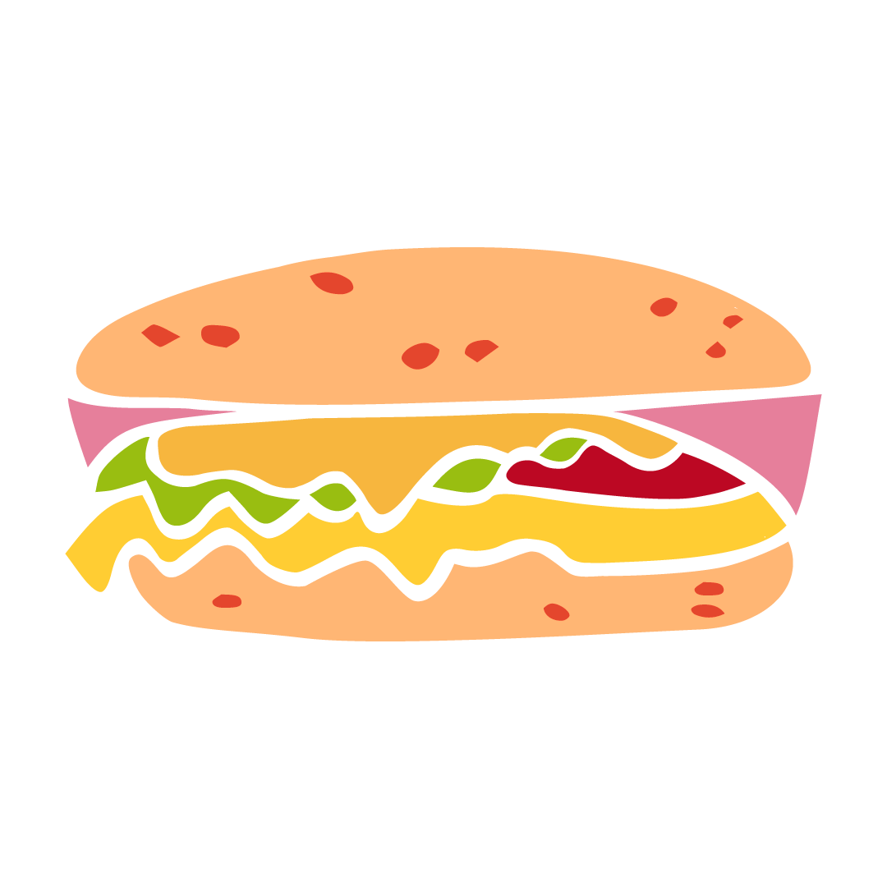

Chipanguche Las primas
Esta es la historia de Las Primas
Nació de las reuniones familiares en las que nos divertíamos cocinando y no supimos que estábamos creando algo nuevo para la región
En la actualidad adoptó el nombre de Chipanguche para que sea divertido y distinto